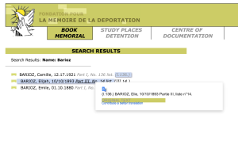
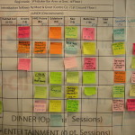
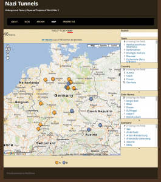

I recently had a whole week to work on my dissertation. Each day I wrote my
thoughts at the beginning of the day and a short To Do list. I thought I would
share as it is a small glimpse into the process of writing a large scholarly
work.
Monday, July 11, 2016
Today I worked on
– flow and structure of Chapter 1, part 2.
– take out all of the passive voice in chapter 1, part 2, and parts of the
Introduction.
– Export parts of the Intro and Chapter 1 to Word document to send to
committee.
Didn’t finish going through:
– flow and narrative of Research Question and Argument sections of the
Introduction.
– flow and argument of Chapter 1, part 2, to see if it fits section
conclusion.
Tuesday, July 12, 2016
I should read through the chapters about the prisoners to see if they actually
uphold my new argument…
To do today:
– Read Introduction for flow and narrative. Check for grammar, argument, etc.
– Read Chapter 1, part 2 for flow, narrative, grammar, and to see if it fits
the conclusion of that section.
– Format and send it to committee.
Need to research:
– which historians argue that “Vernichtung durch Arbeit” was selectively
applied, and which do not.
Wednesday, July 13, 2016
Maybe I should just roll Chapter 1, part 1 into part 2 and not have parts.
To do today:
– Read through Koel book on history of the SS.
– Start reading Langerich’s biography of Himmler (decided to get the English
version for the sake of time).
– Read through Chapter 3 to see if my new argument is supported
– Notes while reading:
– Clarrify argument for the chapter and rewrite the chapter introduction.
– Use available works about the Neuengamme KL when discussing the
Neuengamme KL
– Address the vast literature about the Holocaust and KL research. Put
the most important in a big footnote.
– Passive voice should be removed!
– Prison Infirmary section: Add wordage that talks about how the SS did
not care for the inmates and wanted them to die.
– Technical writing point: Add @ to the end of the Zotero source when
citing multiple sources. Then in Word, search for '.@' and replace with ','.
Thursday, July 14, 2016
Really frustrated and depressed about the dissertation today. I don’t think I’ll
get it finished, and I don’t care to work on it anymore. I don’t think I’ll get
the argument right. I probably can’t justify/support the argument based on the
research I have already done, and I can’t handle any more research at the
moment. It’s never enough! (This song comes to mind: https://youtu.be/37tzsSP-Dc0)
Well, suck it up, quit whining (elitist, 1st world problems) and get back to
reading through Chapter 3.
Notes while reading:
– At beginning of Prisoner Hierarchy section, discuss why important and what
it shows about SS ideology vs. economic drive.
– Do this for each section.
– Prisoner Hierarchy section:
– Make note that this camp used similar hierarchy as other camps. Self
regulating inmates.
– Section on hair: provide more analysis. What did the different hair cuts
mean?
– Letters and packages section: Show that Danish were privileged because
they were the only ones allowed to send and receive letters and packages.
Friday, July 15, 2016
So, good news back from the committee which means I’m in good spirits again.
What I did was actually good and acceptable. So now, moving on. Some thoughts:
– Perhaps just merge part 1 and part 2 of chapter 1.
– Maybe leave Chapter 3 and 4 as is with a clarification or argument that the
survivor voices should stand on their own. Then a fifth chapter analyzing
them?
To do today:
– Read through Spoerer book, to say that I have and footnote it, shows basics
of SS history. Found really good article by Spoerer with discussion about
defining the terms forced laborer, foreign laborer, slave laborer, and
less-than-slave laborer. Use this in Chapter 1 instead of the confusing
paragraph I had before.
– Merge part 1 and 2 in Chapter 1. (not done yet)
– Write up this weeks notes as a blog post (done a few days later)
– Format Chapter 1 and update the dissertation website (not done yet).
How to write in Scrivener and display in HTML, Markdown, ODT, or Doc and keep the footnotes and images.
This is the process I use for getting my chapters out of Scrivener and formatted into Markdown and HTML for putting on the web. Markdown for Github, and HTML for a static website, and Doc for turning in to advisors and the Library.
Write it
Use Scrivener to bring all of the notes and sources together in one place.
Note it
The process of writing actually begins while reading through books and looking at original source documents. For each source (whether book, document, image, or web page) I create an entry in Zotero. With an entry in Zotero, I create a child-note for that entry and take notes in that child-note. I always include the page number in the notes for easy referencing later. A typical note for an entry in Zotero looks like this:
Kaj Björn Karbo (July 4, 1920)
{ | Karbo, 1947 | | |zu:312:A6J3JADD}
page 1,
1400 men were supposed to wash in half and hour at 20 faucets.
Longest roll call was 4 hours because a couple of men had escaped.
page 2,
Relationship to Kapos was bad, also to Russians, and somewhat so to other nationalities.
Kapos were German, Russian, Polish and Czech
page 3,
Punishments consisted of beatings with boards from a bed and truncheon.
Stretched over a bench and held by four men and then beat
page 4,
Was part of many different work commands. In January 1945 was Schieber,
the lowest rung of prison hierarchy. He was in charge of a 16 man work
gang. they helped German civilian workers build a factory for synthetic fuel.
The part in curly braces { | Karbo, 1947 | | |zu:312:A6J3JADD} comes in handy later when adding citations in Scrivener.
Compose it
With all of the notes taken (for now, it can be a never ending process), copy and paste the relevant notes in the correct section of the Scrivener outline. Basically, each idea gets its own ‘page’. This boils down to each paragraph, more or less, on its own ‘page’.
Export it
First step is to export the chapter from Scrivener.
Export it as the OpenOffice (.odt) format. Give it a name like chapter2.odt.
Scan it
To get the footnotes into the correct format (MLA, Chicago, etc), we’ll scan the .odt file with Zotero. This creates a new file.
Open Zotero, click the gear, and select ‘RTF/ODF Scan’.
Select the file you created above (chapter2.odt).
Create a new name and place to save it (chapter2-citations.odt)
Cite it
The Zotero scan converts all of the coded citations from Scrivener into ‘normal’ citations.
from this: { | Blanke-Bohne, 1984 | p. 16 | |zu:312:KMQEIBU0N}
to this: Blanke-Bohne, 1984.
To get it into a different citation style, we’ll open up the file in LibreOffice and change the citation style using the Zotero ‘Set Document Preferences’ menu.
from this: Blanke-Bohne, 1984.
to this: Blanke-Bohne, Reinhold. "Die unterirdische Verlagerung von Rüstungsbetrieben und die Aßuenlager des KZ Neuengamme in Porta Westfalica bei Minden." Dissertation, University of Bremen, 1984.
After the changes finish (could take a while), then save the document as a Word, make sure to do a ‘Save As’ .docx file (chapter2-citations.docx).
Fix it
Only the .docx format is supported by pandoc for extracting images, so we’ll need to use Word as the final format before converting to Markdown and HTML. Frankly, it also has much better grammar and spell checking.
Open the .docx in Microsoft Word and fix up any formatting issues.
I also turn this version in to my advisors for review.
Convert it
In the terminal, we’ll use the pandoc command to convert the file to Markdown and HTML.
This will convert the .docx file to a markdown file, extracting the images and putting them in a ‘files/media/’ directory.
The images are named incrementally in the order they are encountered in the document. The images are given a default name, keeping the extension. If I had four images in the file (two jpegs, one png, and one gif), they would be extracted and named like so: image1.jpeg, image2.jpeg, image3.png, image4.gif, etc.
We’ll have to go in and fix the tables and check for other formatting issues.
This creates an HTML file with the images linked to the files in the files/media/ directory and the footnotes converted to hyperlinks.
Version it
Now these files can more easily be tracked with a versioning system, like git, and the HTML files can be uploaded for a static website version of the
dissertation. Styling can easily be applied if used in a Jekyll site.
For sharing on Github, there are two repos, main and gh-pages.
main repo
The main repo is simply the chapter directories with each of the document versions and the extracted media files. Once edits and conversions are done, this is updated with a simple
The gh-pages repo contains the files needed to convert the html version of the doucments into a Jekyll based static website. The trick here is to get all of the updates from the main repo into this gh-pages repo. This is accomplished with doing the following command while checked out in the gh-pages branch.
```
git checkout master -- chapterX
```
Before I can push the new changes to Github, I’ll need to fix a few things in the html version of the chapter.
First is to add some YAML front matter. I add this to the beginning of the HTML version.
---
layout: page
title: Chapter X
---
Second, update the path for the images so that they will work. I open the file in Vim and do a simple search and replace:
:%s/img src="files/img src="..\/files/g
Now I can update the gh-pages branch and the site.
Visual representations of data offer a quick way to express a lot of information. As the old adage goes, a picture is worth a thousand words. One of the facets of digital humanities research is providing information in the form of visuals: graphs, maps, charts, etc.
I was already writing up some notes on a visualization I was creating for the dissertation when I read this excellent blog post by Fred Gibbs (a version of a presentation at the AHA 2015). In this essay I think Fred accurately identifies the digital humanities field as one in need of stepping up to the next level. It is no longer enough to present visuals as humanities research, but it is time to start critiquing what is presented, and for researchers to start explicitly explaining the choices that went into creating that visualization.
With those thoughts in mind, I present the methodology, the decisions, and the visualization of over 200 deaths at the KZ Porta Westfalica Barkhausen, during a one year period.
A change is happening (at least for me) in how data is analyzed. I have a spreadsheet of over 200 deaths, with various information, death date, location, nationality, etc. The desire to create a visualization came from wanting to understand the data and see the commonalities and differences. The first question I had was how many nationalities are represented, and which countries. The second question is what is the distribution of the deaths by month.
The following is how I came to a visualization that answers the first question.
Data Compilation
Data is taken from two locations and merged.
The first set of data is a large spreadsheet obtained from the KZ Neuengamme Archiv containing all of their data on the prisoners that died and were at KZ Neuengamme or one of the satellite camps. This file contains 23,393 individuals.
The second data set is another set of files from KZ Neuengamme Archiv, but is derived from a list compiled by French authorities. It is available online at: http://www.bddm.org/liv/index_liv.php. The files were split into three sections listing the dead from Barkhause, Porta Westfalica, and Lerbeck. These files contained a total of 177 individuals.
Combining just the individuals matching those who were in a Porta Westfalica KZ from both sets of data left around 280 individuals.
Data Cleaning
There were a number of steps needed in order to have useful information from the data.
First of all, the data from the French archive was highly abbreviated. For example, the column containing the locations of internment were two or three letter abbreviations of location names. Elie Barioz, for example, had the locations “Wil, Ng (Po, Bar)” which, when translated, turn into “Wilhelmshaven, Neuengamme (Porta Westfalica, Porta Westfalica-Barkhausen)”
The process of translating the abbreviations was quite labor intensive. First, I had to search on the French site for an individual:Â http://www.bddm.org/liv/recherche.php
Search for ‘Barioz’. Note: The Chrome web browser can automatically translate the pages on this site.
The correct individual can be determined by comparing the full name and the birthdate. The citation to the location in the book is a hyperlink to that record (ex. Part III, No. 14 list. (III.14.)).
The abbreviations for this individual’s interment locations are hyperlinks to more information, part of which is the full name of the location. Clicking on ‘Wil’ results in a pop up window describing the KZ at Wilhelmshaven and information about the city.
After determining that ‘Wil’ meant ‘Wilhelmshaven’, all occurrences of ‘Wil’ in that column can be changed to ‘Wilhelmshaven’.This process is repeated until all of the abbreviations have been translated.
Remove extraneous asterisks. It was quite frustrating to note that the French site did not include information on what the asterisk and other odd symbols mean. (Another odd notation is the numbers in parenthesis after the birth location.) I had to simply just delete the asterisks, losing any possible meaning they might have had.
Combine duplicates. Keep as much information from both records as possible.
Fix dates. They should all be the same format. This is tricky, in that Europe keeps dates in the format MM-DD-YYYY. For clarity sake, it would be best to use “Month DD, YYYY”. I left them as is for now. Editing 280 dates is not fun…
Fix nationality. The Tableau software references current nations. The data in the spread sheets uses nations current to the time of creation. For example, some individuals were noted with the nationality of ‘Soviet Union (Ukraine)’. These needed to be brought to the present as ‘Ukraine’. More problematic were the individuals from ‘Czechoslovakia’. Presently, there is the Czech Republic and Slovakia. The question is, which present day nationality to pick. There is a column for birth place which potentially solves the issue, but this field is for where the individual was born, wich, in the case of Jan Siminski, is seen. He was born in the Polish town of Obersitz (German translation), so the birth place can not clarify his nationality as Czech or Slovakian.
This brings up another issue, the translation of place names. City names in German, especially during the Third Reich, are different than current German names for the city, which are different than the English name of the city, which are different than what the nation calls the city. I need to standardize the names, picking, probably English. Tableau seemed to have no problem with the ethnic city names, or the German version, so I left them as is.
This allows for very quick visuals, and a very easy process. The website has a number of free tutorials to get started. http://www.tableau.com/learn/training
Map
The first visualization I wanted to make was a map showing where the prisoners were from, their nationality. The map would also show the number of prisoners from each country. (This is not a tutorial on how to use Tableau, but a walk through of the pertinent choices I made to make sense of the data, it is methodology, not tech support. 🙂 )
Using the default settings (basically, just double clicking on the Nationality field to create the map) results in a dot on each country represented in the data.
This can be transformed into a polygon highlight of the country by selecting a “Filled Map”.
Next step was to apply shading to the filled map; the larger the number of prisoners who died from that country the darker the fill color.
The default color was shades of green. I wanted a more dull color to fit in with the theme of the visualization, “death”. I picked a light orange to brown default gradient, separated into 13 steps (there are 13 countries represented).
Table
While just a filled map with gradient colored countries is helpful, the information would be more complete, more fully understandable, with a legend. This can be created by using a plane table listing the countries and the number of dead from that country. Each row is color coordinated with the map by using the same color scheme and number of steps as with the map.
Dashboard
In Tableau, you create a dashboard to combine the different work sheets, maps, tables, graphs, etc. In this case, a full page map, with the table overlaid completes the visualization.
Result
The result is a very simple map, created in about ten minutes (after a few video tutorials to refresh my memory on how to create the affects I wanted).
(See a fully functioning result below this image.)
Benefits of Tableau
Tableau has some limitations. The results are hosted on their servers, which has the potential for lock down. They use proprietary, closed source code and applications.
But there are many benefits. The default visualizations look great. It is very easy to create simple and powerful visualizations. The product is capable of producing very sophisticated statistical representations. You can use the free and open source stats program R. The visualizations are embed-able in any website using Javascript.
The biggest benefit of using Tableau is the automatic link back to the original data source. I think the most needed shift in humanities (particularly the history profession), and the biggest benefit of “digital” capabilities for the humanities, is the ability to link to the source material. This makes it infinitely more easy for readers and other scholars to follow the source trail in order to provide better and more accurate feed back (read critique and support).
To see the underlying data in this visualization, click on a country in the map or the table. A pop up window appears with minimal data.
Select the “Underlying” tab and check the “Show all columns” box. Voilà !
Behold the intoxicating power of being able to view the underlying data for a visualization!
Digital Humanities Improvement Idea
Imagine, if you will, the typical journal article or book, with footnotes or end notes referencing some primary document or page in another book or article. With digital media, that footnote turns into a hyper-link. A link to a digital copy of the primary document at the archive’s site, or the author’s own personal archive site. Or it links to a Google Book site with the page of the book or journal displayed. Now you have the whole document or at least a whole page of text to provide appropriate context to citation.
Way too often I have been met with a dead end in following citations; especially references to documents in an archive. Not often, but archives change catalog formats, documents move in an archive, they no longer are available to researchers, etc. It would be so much easier to have a link to what some researcher has already spent time finding. Let’s build on the shoulders of each other, rather than make each scholar waste time doing archival research that has already been done.
I think it incumbent upon all researchers to provide more than a dead-text citation to their sources. In this digital age, it is becoming more and more trivial to set up a repository of the sources used in research, and the skills needed to provide a link to an item in a repository less demanding. Here are some ideas on how to accomplish this already.
Set up a free, hosted version of Omeka at http://omeka.net. Add all of your source material to Omeka. Provide a link to the document in Omeka along with your citation in the footnote or end note.
Create a free WordPress account at http://wordpress.com. Add a post for each source document. Provide a link to that post in your citation.
Most universities have a free faculty or student web hosting environment (something likehttp://univ.edu/~usrname/). Dump all of your digital copies of your documents in that space (nicely organized in descriptive folders and with descriptive file names–no spaces in the names, of course). Now, provide a link to that resource in your citation.
Set up a free Zotero account at http://zotero.org. Set up a Group Library as Public and publish all of your sources to this library.
I intend to take my own advice. I have an Omeka repository already set up, with a few resources there already: NaziTunnels Document Repository. Once I start publishing the text of my dissertation, there will be links back to the primary document in the footnotes.
I would love to see this type of digital citation become as ubiquitous as the present-day dead-text citation.
I have not addressed Copyright issues with this. Copyright restrictions will severely limit the resources to be used in an online sources repository, but there are certainly work ways to work around this.
If hosting the sources on your own, one quick fix would be to put the digital citation sources behind a password (available in the book or journal text). Another option might be to get permission from the archive if only low quality reproductions are offered.
End
Let me know if you find the live-text or digital citation idea viable. Do you have other ideas for providing a repository of your sources?
Drop me a note if you want more detail on how I created the map in Tableau. I’m by no means proficient or in no way the technical support for Tableau, but I’ll do what I can to guide and advise.
I presented the following at the Association of American Geographers Annual meeting on April 21, 2015. I titled the presentation, “Placing Space in the Experiences of Forced Laborers at Porta Westfalica”
What follows is the paper with the images I used in the presentation. This will turn into the presentation I’ll give in Porta Westfalica on May 8, and a journal article this summer, and eventually a chapter of the dissertation.
==========
Location is important for human interaction and growth development. Being able to place ourselves in a location and being able to recall the location of things and events is also critical for our ability to remember. As one psychologist put it, “memory for location is a fundamental aspect of human functioning. Without the ability to remember locations, children and adults would be unable to carry out even basic tasks, such as getting ready for school or preparing a meal.”[1] Indeed, it seems the visual aspect of remembering is integral for recalling memories made with sight. Studies have shown that a person’s memories are affected when they lose their vision, eventually leading to losing memories, “even well-rehearsed and well-consolidated childhood memories, are lost because the relevant visual information, which is a key part of the memory information, is lost.”[2] When vision is lost, the memories made with that vision erode until they are forgotten completely. New memories can and are made, but without the visual component.
Events and experiences are more accurately remembered, and remembered with more detail, when influenced by strong emotional stimulations (such as during traumatic and stressful events). More so, such memories are strengthened by and even depend upon the visual component. During highly traumatic or stressful events the visual awareness is sharpened, hence ones surroundings, ones location and spatial awareness, become more important. Remembering the place helps us remember the event. This is arguably the case for why many holocaust survivors recall so vividly, and invariably include in their autobiographical accounts, the place names of where traumatic events happened.
Often, survivors put great emphasis on recalling with the place where seemingly unimportant events happened, like which town they travelled through on the way to a prison camp. Zsuzsa Farago a 24 year old female Jew from Hungary, for example, could not remember the date when she left Auschwitz for a labor camp, but she did remember several details about the location. “I don’t remember exactly anymore, I believe that we were transferred sometime in the Fall. We were taken to Reichenbach. There was a telephone factory there. I believe that belongs to Czechoslovakia today, then there were Germans. Far away from the city there was a camp, and that’s where we were. And we worked in the factory there.”  Specific time aspects seem to fade quicker than spatial aspects of memories.
At other times, the survivor’s grasp of the time was just as acute as their location. Eva Gescheid, a 20 year old female Jew from Hungary, described her journey to Auschwitz and later to Porta Westfalica with such detail. “We travelled for four days and nights, unspeakable suffering, because there were 70-80 people transported in closed cattle-cars. There was absolutely no water. After four days we came to Auschwitz… It was March, rain and snow showers raged. We possessed only one blanket each, which provided only a little protection. Six days and nights we traveled and suffered the torments of hell. Finally we reached Porta. We were unloaded and again left without food; this for two whole days.”
Before I even had the data, I wanted to do some kind of spatial analysis. That’s like buying a car just for the experience of changing a tire, or more accurately, putting the proverbial cart before the horse. Nevertheless, I was certain that there was some spatial context to analyze, for everything happens somewhere, and looking at the somewhere can help us understand more about the events. I also had a tendency to focus too much on the tools and methodology, so it was important to remember that the spatial plotting tools and the data points were not the analysis, but only tools used to analyze.
The first step in gathering data was to determine the scope. With hopes of finding plentiful events, the scope was narrowed to focus only on the time that a survivor was encamped at one of the Porta Westfalica labor camps, Barkhausen, Lerbeck or Hausberge, and their accompanying work site. As I began to assemble the data, looking at the interviews and deciding what elements to track, I began to ask questions that I was hoping the data would be able to answer. Some initial questions I had were: Were there more bad memories than good? Or, given the circumstances, were there any good memories? In terms of percentage, which gender had more or less than the other of good or bad experiences? What were the age ranges of the prisoners? Where were the majority of the inmates deported to? Where does most of the violence and death happen?
The final question seemed to have the most potential of being answered once I started going through the data to pull out events. I was also able to find that there were indeed good experiences had in the concentration camp. Only after I gathered the data and began to try different ways of graphing and mapping the data did more questions arise. Most surprising were the number of gender based questions that arose from looking at the data. Some of these questions included the following: Which prisoner had the greatest number of events? Since the number of male and female interviews were comparable (6 female and 8 male), which gender had the greater number of events and why? Was one gender apt to have more experiences with certain events than the other?
Other location-based questions arose as well. Although seemingly obvious, where did the majority of work related, violence, and death events happen? Which location had the most events? I was also interested in seeing what patterns or information stood out that was not anticipated.
The data points come from an original pool of 25 transcripts of interviews or other written accounts by survivors predominantly taken during the 1990s. Only 14 ended up having events that could be used in this study. While most of the accounts contained plenty of spatial references, only 14 had such references while recounting their time at the Porta Westfalica camps. Females accounted for 6 and males for 8 of the accounts used in this study. A total of 90 events were found in the 14 accounts.
I was hoping the accounts would be replete with retellings of events and graphic descriptions of the locations where they happened. It would have been great if the survivors were able to describe in detail where they were standing at any given point and had a plethora of events to recount. In reality, the events were much more general and quite vague. Instead of someone describing where exactly in the camp or tunnel they were standing when an event of violence happened, the event was reported more generally; an act of violence happened. For example Tadeusz Kaminski, an 18 year old Polish prisoner in Lerbeck reported that “the camp elder was a German, a sadist without any feeling. Even early in the morning before roll call he would beat the prisoners without mercy. He had a riding crop always with him and would beat as the feeling came.†No specific location is given, just that violence would happen.
A number of limitations of the data should be addressed. First is the limited number of accounts used in the study. Fourteen is admittedly a small number compared to the 2,970 prisoners at the three camps, and therefore all interpretations and conclusions are given in light of a decided lack of representation. Nevertheless, the results that do come from the limited data are instructional and can, arguably, be reflective of the larger number of experiences at the camps.
Second, a number of the accounts were taken from legal depositions or questionnaires where the intent was to show the brutality and inhumanity suffered at the camp. While these accounts may have a tendency to skew the resulting events towards the violent and negative, it can rightly be argued that due to the nature of the camps the overwhelming experiences would be that of violence, death and work.
Third, in some cases I may have been more general and forgiving as to what constituted an event than I was for other accounts. This was not a conscious choice, but is rather an acknowledgement of human error.
Limiting the events to their time in Porta Westfalica severely truncated the experiences of the survivors. Generally, only a third or less of the entire account was about the survivor’s time in the Porta Westfalica camp.
Lastly, the locations of the events were not specific enough to generate a unique latitude and longitude coordinate. Locations were given one of five sets of coordinates that correspond to the Barkhausen camp (as the barracks, sickbay, roll call and bathroom), the tunnel entrance on Jakobsberg (as the worksite for Barkhausen), Lerbeck (which contained all locations), the approximate location of the Hausberge camp (as the barracks, sickbay, roll call and bathroom locations), and the top of the Jakobsberg as the worksite for Hausberge.
I began the process of recording events by making a list of locations and events that I thought would show up in the accounts. My initial list of locations included bathroom, barrack, roll call, worksite, and sickbay; and events like food, work, sleep, life, hygiene, violence, good, death, and sick. The final list of locations and events did not change much. In most cases, determining an event was pretty straightforward. For example, Eva Gescheid frankly described, “we possessed no shoes.â †That describes an aspect of life, so easily fits in the life event. The location is less clear. If this is to mean that they had no shoes at all, period, their whole time in the Hausberge camp and adjacent worksite under the mountain, then this event could apply to all locations. In the instances of avocation, food, life and sleep events, I placed all of these in the ‘barracks’ location.
Sometimes the event and location are clear, as is the description of a death retold by Anton Daniel Cornelis van Eijk, a Danish prisoner of war at Lerbeck. “I sat in Lerbeck for six months, and in these six months, so far as I know, two people died.†He then recounts the story of a young Polish man, 28-30 yrs old, who was hanged because he called a camp elder (Lagerältester) a communist. A few prisoners, perhaps Russians, helped with the hanging. Apparently he was not completely dead when they finished, so he was taken to the sick bay where he was given an injection of gasoline which caused him to die. Here both the location and the event are known.
In looking at the data, a number of interesting patterns arise, answering many of our questions from above regarding gender. As noted, only 14 interview accounts out of 24 held information that made it into the study. Again, that’s not to say that the other account did not hold important and interesting data, but they did not recount any experiences that related to Porta Westfalica specifically. The number of interviews ended up being pretty evenly split with six female accounts and eight male accounts. This is rather interesting as there were nearly twice as many male prisoners (1,970) as there were female (1,000). Unexpectedly, the number of accounts from the Barkhausen camp (4) is equal to the number from Lerbeck (also 4). With nearly three times as many inmates at Barkhausen (1,300) as at Lerbeck (500), one would think more accounts would come from Barkhausen. Again this points to the limitations of the study, in that a proportionally representative number of accounts from Barkhausen were not available. The average age of the survivors at the time of internment was 25.5 years of age. Two survivors, Dmitrij Iwanowitsch Zwagorskij and Pierre Lecomte did not have enough data to determine their age at the time.
Comparing total page count with the number of events in the study is also enlightening and somewhat counter intuitive. While Vincent Lind and Zsuzsa D. Farago do indeed have the most number of events represented in the study, Zsuzsa Papp, who had the second most total number of pages, only provided one event to the study. Likewise, Axel Christian Hansen, a 44 year old political prisoner from Denmark, and Anton Daniel Cornelis van Eijk, a 41 year old prisoner of war from Denmark, each contributed 14 and 13 events respectively, while only having 10 and 6 pages of account respectively. This simply shows that the number of pages in the account do not necessarily predict the number of events reported.
Number of events by type of event.
Looking at the events related by gender also uncovers an interesting dichotomy. While males had at least one record in each event, the female accounts mainly centered around three events: work, life and good experiences.
According to the few accounts available, women spoke predominantly about life in the camp, talked about the work they were forced to accomplish, and related a few good experiences. Interestingly, life experiences only had one less than work experiences, 9 and 10 respectively. This seems to indicate the women were more focused on the work and living conditions while at Porta Westfalica. For the women, only one instance of violence was recorded.
As anticipated, men focused their accounts mainly on work and violent experiences, followed by good and life experiences. Also as expected, 51 events—over half the total number of events—speak of negative experiences, with surprising 11 instances of good events happening. Surprisingly, there were not as many accounts of death as expected. With a higher percentage rate of deaths than the parent camp of Neuengamme, I expected there to be more death events in the accounts than was represented. Vincent Lind and Anton Daniel Cornelis van Eijk provide the only male accounts of death, and Klari Sztehlo Neumann and Zsuzsa Farago provide the two accounts of female death in the Hausberge camp.
Number of events.
Turning to spatial representations of the data show an equal number of interesting patterns. Work events are the most numerous (26), followed by violence and life events (16 each), good experiences (11), and a surprisingly small number of death events (6). Not surprisingly, at the three labor camps, work events are the most numerous.
Number of events by location.
Placing these events where they happened provides more insight. As one might expect, most of the work events happened at the work location. Two exceptions are more related to placing events that are really roll call experiences, rather than work experiences in the the work event category due to lack of a roll call event category.
One of the main questions I had was where did the violence happen. I speculated that most violence occurred near the camp rather than at the work site, in that the SS guards would rather their prisoners work and therefore refrain from violent actions. This assumption assumes that most violent actions came from prisoner guards, but in actuality, violence most often came from fellow prisoners, specifically those with some position like the Lagerältester. Indeed, all seven accounts of violence in the work place came from fellow prisoners. Only two cases of violence at the barracks where perpetrated by camp guards. All three violent events during roll call were carried out by SS guards.
An almost equal number of good experiences as violent experiences at the worksite, and to a lesser extent the barracks. The surprising number of good experiences come from three individuals, some describing the beauty of the landscape, some describing positive interactions with other inmates or civilian laborers, or even a positive interaction with a Gestapo officer.
Perhaps obvious, only negative events happened in the sickbay; three deaths, and one each of violence, sick and bad.
The barracks had the most number of different events, most likely allowing to the barracks being the only other place rather than the worksite where the inmates were allowed to go. At the work site, as seen in the graphs, was mostly concentrated on working. The barracks allowed for a larger variety of action.
Number of events at places.
Looking at the different camps also shows patterns. Lerbeck had almost double the number of violence than either Barkhausen or Porta Westfalica (worksite), possibly because Lerbeck included living and working conditions, but had less than half as many accounts of work than the work site at Jakobsberg.
Attempts were made at mapping the various events and the location, but due to the small number of locations, the maps do not reveal much more than the graphs.
A further spatial study arose while reading through the interview accounts. Central to all remembrances was the complete circle the survivors made in terms of their journey; from initial confinement to internment and transportation to various camps, and the journey back home. The next spatial project will use Omeka and Neatline to create an interactive journey of several survivors. As the narrative of the journey is told, the locations will be displayed on the map, and visitors will be able to follow along on the map as well as with the narrative.
The project will be hosted at http://nazitunnels.org
One final thought and caution to keep in mind when doing spatial projects with such sensitive and emotional data is that plotting and graphing the data can abstract the humanity from the survivors, as they become dots on a map rather than people. Care must be taken to keep the humanity in these spatial humanities studies.
One way to do that is to always reference the names and use examples of their experiences.
[1] Jodie M. Plumert and Alycia M. Hund, “The Development of Memory for Location: What Role Do Spatial Prototypes Play?,†Child Development 72, no. 2 (March 1, 2001): 370–84, 370.
[2] David C. Rubin, “A Basic-Systems Approach to Autobiographical Memory,†Current Directions in Psychological Science 14, no. 2 (April 1, 2005): 79-83, 80.
I recently participated in the annual German Studies Association Conference. (On a side note, my last professor at ASU, Dr. Gerald Kleinfeld started the GSA.)
I was delighted to be on one of two DH panels at the GSA. Since I don’t have anything noteworthy finished or started with my dissertation, I spoke about how the humanities can and should learn from the Open Source community. Specifically, the humanities can learn three things from the Open Source community, more particularly from how the communities that existed to create the Internet and open source software. The three points I talked about in the paper were:
Freedom of information, ability to share and collaborate on research in open and unrestricted ways
Ability to find more sources
Ability to allow a wide range of interested individuals to participate
Here is an HTML version of my presentation (unfortunately I used boring PowerPoint…):
In the spirit of Open Source, I should have posted these much earlier before the conference and let interested individuals make comments, corrections and additions. But, as is all to common with me, I waited until the last minute and didn’t even finish until the day before. Nobody else does that, right? 🙂
Kansas City has a Lego Land attraction. The mall next door had these giant mini-figures.
Can’t go to Kansas City without getting some BBQ.
Yummy pulled pork sandwich with fries and a peach pie!
Neat looking Catholic church across from the hotel.
The experience was great. I met some people, got some ideas, learned some things… Most importantly I got some ideas from Paul Jaskot about how to do the “digital aspect” of my dissertation. Details to follow in another post.
One of the uses of Digital Humanities is to enlarge the community of scholars. Building up to a paper at the annual German Studies Association conference in September, I will be researching how the Open Source model of creating software and hardware can be applied to the humanities. Specifically, what does having open access to information and scholarship do to/for/with that information and scholarship. One mantra in Open Source software development is that many eyes on the code spot the errors more quickly. I would like to repurpose that mantra for humanities, specifically history: many eyes make more better history.
To try an experiment, here is a section of chapter one of the dissertation. A quick look at the use of air power as it changed from WWI to WWII and the use of strategic bombing in WWII. Any and all comments on the process, the information, scholarship, history, images, methodology, layout, facts, etc are welcome and acceptable.
STRATEGIC USE OF AIR POWER IN WWI AND WWII
B-24 Liberator in March 1945
By some accounts, the total Allied air offensives during World War II dropped almost two million tons of bombs on Germany, completely destroying over sixty cities, killing an estimated 583,000 Germans as well as 80,000 Allied air crew. [ref]Hansen, Randall. Fire and Fury. Doubleday Canada, Limited, 2009, 279.[/ref] What was the goal of strategic bombing? Did the bombing of British or German cities really have the desired effect? Beginning with their implementation in World War I, airplanes were believed by only a few military leaders at the time to be of any strategic advantage in modern warfare. Incorporating strategic use of airplanes in wartime planning was in itself an early battle fought among US military leaders even before Germany invaded Poland. This section will describe the early use of bombing and how it came to be used strategically in World War II by both Germany and the Allies. Weakening civilian morale and destroying military production facilities were the main goals for both sides of the conflict. This section will look at these two goals, and describe the success or failure of the goals as seen by contemporary observations as well as present-day arguments. Finally, Big Week is discussed as a major turning point in German military planning, effectively cementing the turn from offensive to defensive measures.
Bombing as Strategy
A few British and US airmen saw the advantage of strategic bombing in World War I but were unable to convince Army officers in charge of the war to utilize bombing as an offensive strategy, that is, bombing specific non-battle front targets for the sake of military advantage. For US and British Army commanders in the Great War, the fight was on the ground, between the battling foot soldiers. The airplanes main and only responsibility, according to the commanding officers, was to support those troops. If bombs were to be dropped, they would be at or near the battle’s front. Bombing specific targets, such as military production facilities, was not seen as contributing to winning a war. After the First World War, United States airmen continued to push their belief that strategic bombing could impact a war. Their break came, when air force strategists replied to President Franklin Roosevelt’s general inquiry to the US military in the summer of 1941 for best practices for defeating Axis powers, as they expected and planned for the US entry into the current war in Europe.[ref]Birkey, Douglas A. “Aiming for Strategic Effect: The Evolution of the Army Air Force’s Strategic Bombardment Campaigns of World War II.†Dissertation, Georgetown University, 2013. Georgetown University Library, 7.[/ref]
British Air Chief Marshal Sir Arthur Harris
Britain had also began interwar plans for strategic bombing and beginning with their entrance into war in 1939, British air forces began a systematic bombing of German cities. After the United States entered the war in 1941, they added their air force to the British offensive intensifying the bombing efforts the next year. Bombing raids by the Allies were designed to complete two tasks in hopes of shortening the war: weaken soldier and citizen morale, and destroy German war production. As it played out, strategic bombing of key military locations in the European theater worked as planned, causing German military production great problems.
British Bomber Command under Arthur Harris sought total destruction of industrial areas and their associated civilian support as the main objective. While the press and population saw the bombing of German cities as retribution for bombed British cities, Harris saw it as the way to disarm the German military, city by city if necessary.[ref]Childers, Thomas. “‘Facilis Descensus Averni Est’: The Allied Bombing of Germany and the Issue of German Suffering.†Central European History 38, no. 1 (January 1, 2005): 87.[/ref]
Americans approached the issue of bombing with different goals than the RAF. American air strategists, even between the wars, had long studied the problem of bombing in order to determine the most effective strategy. In studying New York city, for example, they learned that the city could be rendered uninhabitable by destroying just seventeen key location. In studying examples of how the Japanese bombed Chinese cities as well as bombing during the Spanish Civil War, American strategists came to the conclusion that terror bombing, or bombing civilians to weaken morale, most often had the opposite effect, and usually led to a much more resistant population. Based on these studies, American strategy was for precision bombing, targeting key industrial and military locations. That American bombing often ended up destroying civilian areas just as much as RAF bombing was due to the limits of technology, rather than conscious implementation of strategy. U.S. operational records and mission reports from raids show that the Americans consistently and honestly, even relentlessly, stressed precision bombing of military and industrial areas.[ref]Childers, Thomas. “‘Facilis Descensus Averni Est’: The Allied Bombing of Germany and the Issue of German Suffering.†Central European History 38, no. 1 (January 1, 2005): 88-89.[/ref]
Lancaster B, September 1942
Differing opinions as to the purpose of strategic bombing caused some tension among British and American air force leaders. American air forces entered the European Theater as a junior companion to the British forces who had already been fighting for two years. While commanders of Eighth Air Force and Eighth Bomber Command were committed to day time precision bombing, and viewed civilian bombing as a waste of resources and inefficient military strategy, they did not want to create more unwanted tension in the British-American alliance. British military leaders pressed their U.S. counterparts to adopt night time raids, citing high casualty rates and the seemingly ineffectiveness of daytime bombing. American air commanders were able to reach concessions at the Casablanca Conference in January 1943 by persuading British leaders to adopt an around the clock bombing strategy, with RAF bombing civilian locations at night, and American bombers carrying out raids on military targets by day.
I’ve been meaning to get this set up for quite a while, and now that I actually have some solid sources (all secondary for now), I am able to put this together.
Zotero is a great bibliography tool, and the web version allows anyone to collaborate on a group bibliography. This will be helpful in working with the Concentration Camp Memorial and Documentation Center of Porta Westfalica (CCMDC), a group that is actively working with the city of Porta Westfalica to put up memorial signs and collect information relating to the former labor camps.
It’s time to really buckle down and get this dissertation going.
I read “The Clockwork Muse” by Eviatar Zerubavel to give me some ideas on how to accomplish the monumental task of writing a dissertation. In a nutshell, the trick is small pieces, planned times, and deadlines. In more detail, here are some notes that I took away from this book and have implemented in my pacing guide to dissertation completion.
Schedule: Schedule specific times to write, specific hours and days each week. Look at your week, plot out all of your existing commitments, family, work, etc. and schedule writing time into the available spots. Scheduling the time gives it reality, fits it in with your already planned life, and gives it boundaries. The book suggests figuring out how long of a session works for you, and keeping your writing times limited to that. I shouldn’t have any problem, because I can only get a few hours in a day anyways. I have a family (a wonderful wife and five amazing children who want to see their husband and dad some time during the week), a full-time job, Church responsibilities, and personal health needs. That gives me about three hours on three days a week. Making some changes during the summer, I should be able to bump that up to five hours on those three days a week. Plan for known vacations, trips, and other blocks of days where you know you will not be able to write. I figured that I will have three days a week to write, but I still have a lot of research to do, so I bumped that down to two days of writing and one day of research.
Bits and Pieces: Another tip is to divide the dissertation up into as small of parts as possible. This does several things. First it is psychologically a lot easier to think about focusing on writing 5, 10 or 20 pages of a section or chapter, than it is to think about writing a 300 page dissertation. I already had an outline during the prospectus writing phase. That has certainly changed already (due to the need to focus on one tunnel instead of all of them), and will change again as I learn more about the topic. To help with a very basic outline, I looked at several similar works and based my outline on their table of contents. Here is what I have so far:
Introduction: Historiography, methodology, and arguments
Chapter 1: Business Above Ground (193x-1944)
Chapter 2: Decision to Disperse
Chapter 3: Organization of Project X
Chapter 4: Tunnel Technology and Topology
Chapter 5: Collaboration with Killers
Chapter 6: Persecuted and Perpetrators
Conclusion: Meanings, Memories and Movements
That’s about it. I don’t know which tunnel, or which business I will study yet. Once that is clarified, I’ll be able to fill in the X’s and flush out the outline.
One other idea I liked about this section, is to not fall into the traditional trap of writing one chapter at a time. Zerubavel suggests, rather, to write as much as you can on all sections. That makes it that much easier when going through each revision, because you have something there already. Having a draft of the whole dissertation is much different, and far and away much better, than having a draft of only part of the dissertation, regardless of how “finished” the parts are. I’m going to give that a try.
Fail to plan? Plan to Fail: This next part was great in helping me visualize and actually help me believe that this project is actually achievable. With my end date in mind (December 2014, which will give me buffer time and time for revisions for a April 2015 defense and May 2015 graduation date), I figured out a rough estimate of pages needed, how days I will work, how many hours per day, and therefore how many hours available to write the dissertation. Dividing the pages by the hours gives me how many pages an hour I need to write, and a rough estimate of how many pages a day and week I will need to write. I gave myself a whole month of no writing for this year and next for buffer and reality. July of this year is all research, and I’m sure something will come up next year. Here’s what I came up with:
MONTHS
20 months of work (until December 2014, should have first draft all done, and getting revisions for second draft in January-February 2015, third draft in March-April 2015, submit final in April, defend in May 2015)
DAYS
240 days
12 days/month to work on dissertation
HOURS
804 hours total to work on dissertation until December 2014.
A) 3 hours/day to work on dissertation, until June 2013 = 144 hours, March-June 2013 (Monday, Thursday, Friday 5pm-8pm)
B) 5 hours/day if I don’t teach seminary = 660 hours, August 2013 – December 2014 (Monday, Thursday, Friday 5am-7am, 5pm-8pm)
PAGES
300 pages, goal to write that many pages
0.4 pages/hour
A) 1.5 pages/day, 2 days/week, March-June 2013, 12 pages/month
B) 2.5 pages/day, 2 days/week, August 2013 – December 2014, 20 pages/month
6 chapters (not including intro and conclusion)
40 pages/chapter (Intro and conclusion 30 pages each)
Next, I mapped out each day on a monthly calendar (March 2013 until May 2015) with my goals and a place to write my actual progress for the day, like so:
This gives me a tangible, and handy chart to mark of progress, keep myself in line, and give something to others so they can see how I have allotted my time.
The author also suggests making up incentives for accomplishing certain milestones. I have not got to that point yet, but I know what the prize is for finishing the dissertation… a cruise!
Make It So: It’s easy for Captain Picard to get things done, he just says, “Make it so” and people do their jobs and get it done. Well, I’m the captain of this ship, and I say, “Make it so.” Some final tips to get writing are to write out a very rough, very temporary first draft of the whole dissertation. That way, when you get to focus on a specific section, I’m not looking at a blank page, but rather have something to massage, improve upon, and form.
Also, I want to make the transitions from day to day as smooth as possible. Zerubavel suggests taking a few minutes at the end of each writing session to prepare for the next. That way the time wasting and destructive self-critiquing of the previous sessions work is avoided. Some suggestions are to edit the latest draft of the up coming couple of pages, gather materials, sources, ideas for the next session.
Finally, it all boils down to discipline and flexibility. Making a plan, sticking to it, but being flexible enough to adapt to unforeseen issues.
Part of my dissertation methodology is to try to use collaboration to provide an increase in usable sources. To accomplish this, I have set up the Omeka archive with the wonderful Scripto tool. This tool marries an Omeka install with a MediaWiki install to provide a nice way to be able to view images in the archive in order to transcribe and translate them. This post shows the process for transcribing a document/image.
First, go to the archive page: http://nazitunnels.org/archive/
First, go to the archive home page: http://nazitunnels.org/archive/
Next, you’ll want to search for a particular file, or browse by item or collection. The search function is a bit limited at the time. It only searches for text in the titles, tags, and existing descriptions. It doesn’t search for already transcribed text.
Search for an item, or browse by item or category.
Once you find an item to transcribe, click on the image or title to go to that item’s page. On that page, near the bottom, you will see a link to transcribe the item. Go ahead and click on that.
Now you are on the transcription page. Next you will need to log in. (If you would like to help transcribe and/or translate, send me an email, or comment on this post, and I can set you up with an account. And thank you in advance!)
Once logged in, the page will be a little bit different.
Find the ‘edit’ link to start transcribing the image.
Notice the tools available for the image. (Move the mouse cursor over the image if you do not see them at first.)
Blue: You can zoom in and move the image around to get a better view of the text.
Red: Enter the transcribed text in the box. When done, click the ‘Edit transcription’ button.
Green: Only transcribed text should go in the transcription box, use the discussion page to enter comments about the item and ask questions.
Yellow: When you are done transcribing, and have clicked the ‘Edit transcription’ button, you can log out.
Transcription Tools
There is more to transcribing that just typing out what you see. Sometimes it is hard to even know what you are looking at. Here are some guidelines and policies for transcribing the documents here.
Policy (taken from the US National Archives and Records Administration website)
NaziTunnels.org reserve the right to remove content or comments that contain abusive, vulgar, offensive, threatening or harassing language; personal attacks of any kind; or offensive terms that target specific individuals or groups.
NaziTunnels.org will remove content or comments that are clearly off-topic, that promote services or products, or that promote or oppose any political party, person campaigning for elected office, or any ballot proposition.
The content of all transcriptions and comments are visible to the public, thus submissions should not contain anything you do not wish to broadcast to the general public.
If you provide personally identifiable information such as social security numbers, addresses, and telephone numbers in the comments, it will be removed by the moderator. However, if a document itself contains archival or historical personally identifiable information, please transcribe it.
NaziTunnels.org do not discriminate against any views, but reserves the right not to post content or comments that do not adhere to these standards.
By contributing to the NaziTunnels.org you accept that other users may edit, alter, or remove your contribution.
By transcribing or translating a document, you agree that you will not assert or retain any intellectual property rights, including copyright in the translation or transcription.
If you think any of the information in the NaziTunnels.org Archive is subject to a valid copyright claim, please contact me using the Q & A page.
When transcribing records, you should make a good faith effort to accurately represent the information contained in the record. If a document or record is not legible in some parts, please indicate with “[illegible].†Please consult the Transcription Tips at NARA for more information.
Below is a handy list of links to help with transcribing German handwriting and transcribing in general
Part of my dissertation is to create an online archive of the documents I find. Thanks to the Hist 698 Digital History Techne class I had with Fred Gibbs this semester, the technical work of this part of the dissertation is now done. I used Omeka with the Scripto plugin (which is really a bridge to a MediaWiki installation) for the archive, and an Exhibit from MIT’s Simile project for a quick and dirty display of data and a map plotting the location of several of the tunnel locations.
Also part of the course, is to give a brief presentation about the final project, which is taken from this post.
Goals
I had two goals for this course.
Create an quick and easy way to display the location and information about some of the tunnel sites using a selection of documents.
Create an online archive that would allow myself and others to transcribe and translate the documents.
Part 1
I was to use the Exhibit tool to complete the first goal. Set up was a bit more difficult than planned. I had an Exhibit working for a different project, and was finally able to massage the data into a copy of that code, and integrate it into the website using a WordPress Template.
Map showing the location of tunnel projects in the A and B groups.
This allowed me to display the data in three different views. First is the map, as seen above. I was able to show the tunnels in the two different groups identified in the documents. The A projects were existing tunnels, caves, or mines that were to be retrofitted and improved before factories could be moved in. B projects were to be completely new underground spaces.
The Exhibit also has a table view, showing all of the items with select information for easy comparison, or information retrieval at a glance. For each view, the right hand side provides options for filtering the data. Exhibit uses JavaScript, so with of the data is already present in the page, filters and changes are applied instantly without any page reloads and slow data retrieval from the server.
A third view shows all of the items separately, with all of the available data.
Ideally, this information would be stored in a Google Spreadsheet to make updating and adding a cinch, but I was not able to get that working, so the data is in a JSON file instead. It would also have been neat to pull the information from the archive. Perhaps that can be built later.
Part 2
I also set up an Omeka install to host the images I had previously digitized from the United States Holocaust Memorial Museum. I not only want an archive, but also a way to have others transcribe and translate the documents, so I installed the Scripto plugin which is dependent on a MediaWiki install as well.
The ability to transcribe and translate is also an integral part of my dissertation. I want to argue, and show that historical work can not and should not be done alone. One way to do this is to get help from the undergraduates in the German Language program here at George Mason University. The German Language director at GMU is all on board to have some of her upper level students take on translation as part of their course work. This not only helps me, but helps them learn German by looking at interesting historical documents (and hopefully get them interested in history), but also helps future researches to be able to search and find documents easier.
Transcribing and translating made possible by Scripto and MediaWiki.
Historical Questions
This was the hardest part of the course. I’m really good at creating digital stuff because that is what I do all day. But I’m a little rusty on the historical interpretation and asking questions. What also makes this hard is not knowing completely what data I have yet.
Part of the problem with coming up with good, probing questions, is that I haven’t had a lot of time to look at the documents to see what is there. Also, there is not much written on this topic, so I’m kind of figuring out the story as I go. It’s a lot easier to read secondary works and ask new questions, or ask old questions in different ways. But there are no questions yet, except what happened.
The bigger questions, in light of this course, should be about how does this technology that we learned help understand the history, or help generate new questions. Will displaying the data in different ways help me make connections and inspire ideas that I would not otherwise have made or thought? Do the digital tools allow me to process more data than I could do non-digitally?
Another stumbling block (or is it a building block, it’s all about perspective, right), comes from my recent trip to Germany for research. While there I met with Dr. Ulrich Herbert at the University of Freiburg. He’s somewhat of a scholar in the area of slave labor, and has kept up to date on the writings regarding the underground dispersal projects. His wise suggestion for my dissertation was to focus on a single tunnel site, rather than trying to write about the organization responsible for all of the dispersal projects. Such an undertaking would take a life time, he said. So now I need to focus on just one tunnel, rather than all of them. Fortunately, Dr. Herbert put me in contact with the Director of the Mittelbau-Dora Concentration Camp Memorial, Dr. Jens-Christian Wagner. With his help, I may be able to find a specific tunnel to focus on, and make my trip in July 2013 that much more profitable.


{kind=link}
{kind=link}
{kind=link}
{kind=link}
{kind=link}
{kind=link}
{kind=link}
{kind=link}
{kind=link}
{kind=link}
{kind=link}